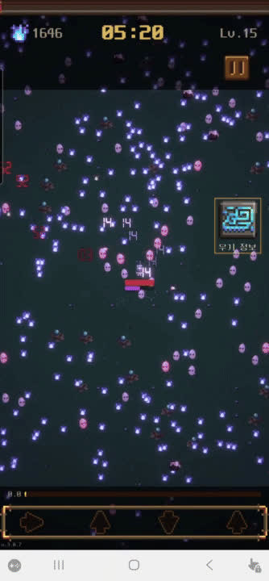
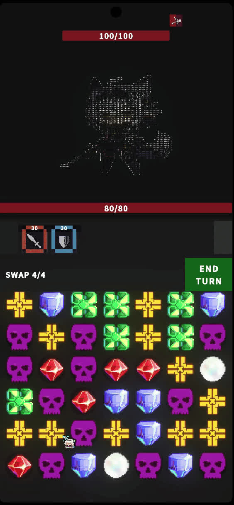
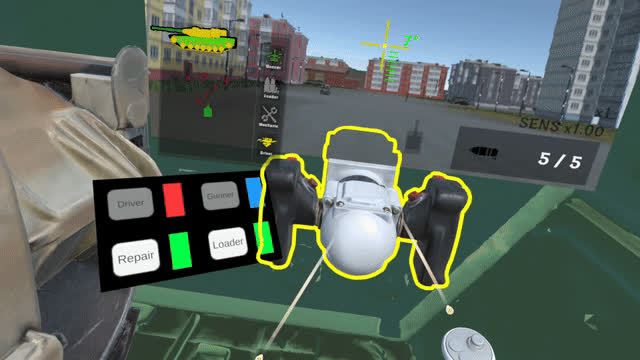
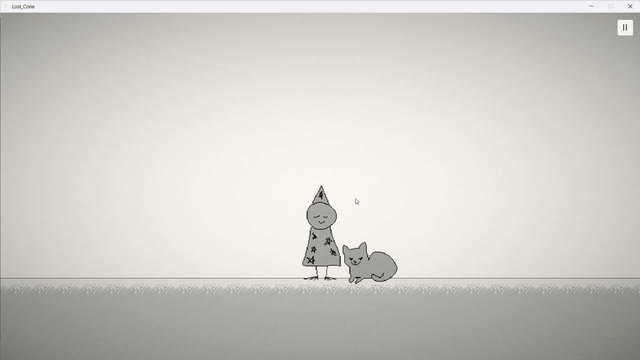
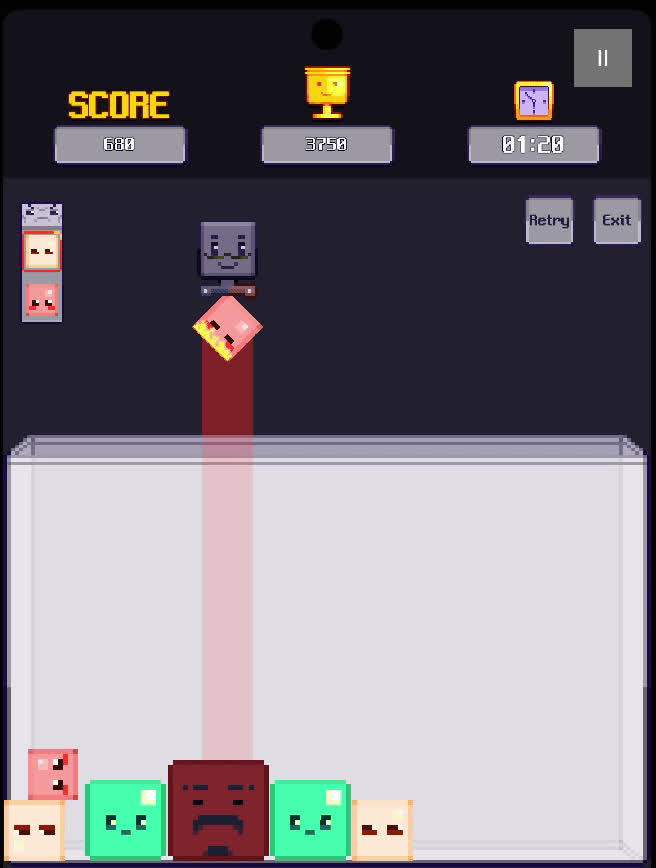

Unity / C# Game Client Developer
출시 경험이 있는 Unity 클라이언트 개발자. 성능 문제를 재설계하고, 팀과 AI가 함께 일할 수 있는 구조를 만듭니다.

Overview
Unity와 C# 기반 게임 클라이언트 개발자. 출시, 최적화, 시스템 설계, AI 협업 구조화 경험을 중심으로 정리했습니다.
| Project | Role | Strongest Signal |
|---|---|---|
| Ghost March | Solo | 출시작을 기준본으로 보존하고 DOTS 구조로 재설계, 성능 수치 확보. |
| Match3LogueLike | Solo / AI Workflow | AI가 구조를 깨지 않도록 asmdef, EventBus, 테스트, 작업 lane 설계. |
| IronSarcophagus | Team 2 | VR 전차 게임에서 포수 조준, 탄도 계산, 적 AI, 네트워크 기반 구조 담당. |
| LostCone | Team / Public Dev | 공개 개발, 플레이테스트, Input System 간헐 버그 해결. |
| Cubika | Solo | WebGL 배포 후 모바일 조작, 게임오버, 광고/IAP scaffold 확장. |
Project
공모전 수상 후 Play Store에 출시한 모바일 액션 게임. 출시 이후 Legacy 구조를 기준본으로 보존하고 DOTS 구조를 실험했습니다.
GameManager.instance가 상태, 입력, UI, 저장을 폭넓게 소유.Weapon.Update() switch 기반 무기 분기로 확장 비용 증가.Project Detail
EnemySeparation 더블버퍼가 chase 이동을 덮어쓰던 문제를 PositionDelta로 해결.RenderMeshIndirect는 URP 2D 궁합 문제로 유지하지 않음.label.text 업데이트를 변경 감지 방식으로 축소.Project

모바일 매치3 로그라이크 구조 설계 프로젝트. AI가 임의로 구조를 깨지 않도록 모듈 경계와 검증 루프를 먼저 정했습니다.
Board와 Combat의 직접 참조는 금지하고 EventBus만 허용했습니다. Data 영역은 MonoBehaviour 없이 SO, interface, enum 중심으로 유지합니다.
Project Detail
RewardOverlayTests PlayMode 10/10 succeeded.SaveManagerPhase1SmokeTests EditMode 4/4 passed.Project

2인 팀으로 만든 VR 전차 협동 게임. 본인 담당은 네트워크 기반 구조, 포수 조준, 탄도 계산, 적 AI입니다.
Project

공개 개발과 플레이테스트를 통해 방향을 바꾼 팬게임. 터치스크린 환경에서 발생한 Input System 버그를 런타임 상태까지 추적했습니다.
Project

WebGL로 배포한 큐브 병합 퍼즐 게임. 출시 후 모바일 조작, 게임오버, 광고/IAP scaffold까지 확장했습니다.
| Project | Role | Evidence |
|---|---|---|
| Cubika | Solo / Release | 큐브 회전, 낙하, 밀기, 3초 game-over grace, WebGL 배포. |
| Dong_Mae | Team / Implementation | 타일맵, 문, 로프, 점프패드, 함정, 보스 패턴, 카메라/페이드 연출. |
| MyTokenMate | AI Workflow Tool | Claude, Codex, Gemini, Copilot 로컬 로그 기반 사용량 overlay. |
Workflow
AI를 단순 코드 생성 도구로 쓰지 않습니다. 역할, 파일 소유권, 테스트, 검증 루프를 먼저 정하고 작업시킵니다.
Links
| Target | Link | Note |
|---|---|---|
| GitHub | https://github.com/NulMa | Code |
| Ghost March | Play Store | Released mobile game |
| Cubika | itch.io | WebGL game |
| LostCone | Dev Log | Public development |
| MyTokenMate | GitHub public repo | AI workflow tool |
| jungwt524@gmail.com | Contact |